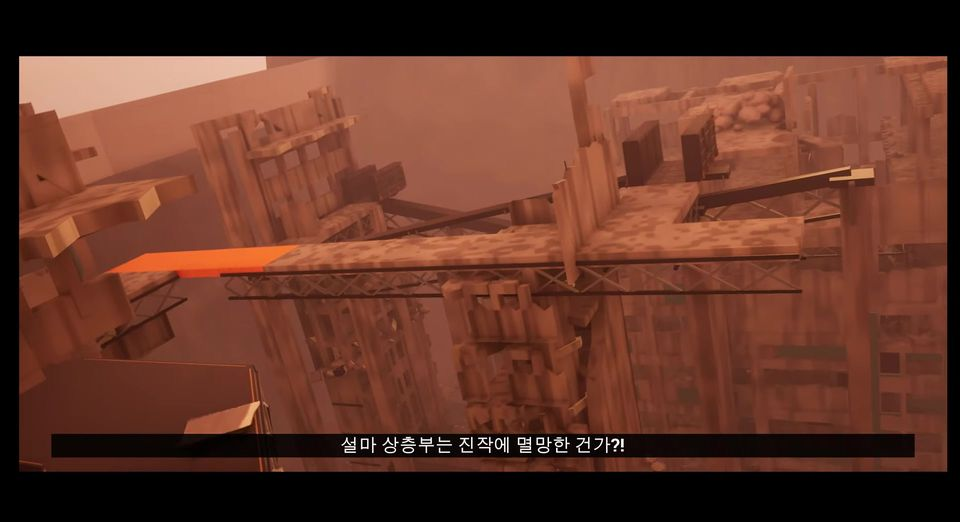

1 · 달동네 · 0:00–1:27
레이저를 피해 도시 쪽으로 도망
NPC 3명이 레이저에 맞아 사라지는 장면으로 시작해 도시 쪽으로 도망칩니다. 레이저 1회 피격 사망 연출을 이 구역에서 보여 줍니다.
LEVEL DESIGN · UNREAL ENGINE 5
재직 중 6주 동안 만든 UE5 개인 레벨. 7개 구역에 긴장과 휴식을 교대로 배치했습니다.
레이저 감시자에게 쫓기며 달동네를 탈출하고, 도시와 지하 수로에서 정보를 모은 뒤, 멸망한 상층부를 지나 연구소 옥상에서 감시자 ‘키클롭스’의 코어를 부숩니다.
구역마다 플레이어가 하는 일이 바뀝니다. 도망 → 잠입 → 대화·탐색 → 안전지대 → 이동 퍼즐 → 추격 → 기록 탐색 → 결전의 순서입니다.
콘텐츠 기획자로 일하면서 언리얼 엔진과 레벨 디자인을 익히기 위해 만든 개인 포트폴리오 레벨입니다.

NPC 3명이 레이저에 맞아 사라지는 장면으로 시작해 도시 쪽으로 도망칩니다. 레이저 1회 피격 사망 연출을 이 구역에서 보여 줍니다.

노숙자에게 힌트를 얻고, 통행증이 없어 관문에서 거절당한 뒤 강 샛길로 빠집니다. 서치라이트에 발각될 위기를 넘겨 도시에 들어갑니다.

여러 NPC에게 정보를 얻고 갱단과 레지스탕스의 존재를 압니다. 1구역에서 안개에 가려졌던 레이저 대가리의 모습을 공사장 인부의 대화로 확인합니다.

엘리베이터로 내려가 수로 끝의 본부에 도착합니다. 갱단이 위장한 레지스탕스였고, 레이저 대가리의 이름이 키클롭스라는 것을 압니다. 대항 무기를 얻고 동료와 출발합니다.

동료의 조언대로 무기를 쓰며 이동 퍼즐을 풀고 코어와 연구소에 대해 듣습니다. 동료와 헤어진 뒤 엘리베이터로 오르며 달동네가 파괴되는 모습과 도시를 번갈아 봅니다.

입구를 부수자 이미 멸망한 상층부가 드러납니다. 펀치와 레이저로 벽을 부수고 광차를 움직여 연구소로 향하며, 광차 벽이 부서지거나 한 번 멈추는 위기를 넘깁니다.

PC 기록으로 상층부가 멸망한 이유와 키클롭스의 행동 원리를 알게 됩니다. 비가 오는 것을 확인하고, 엘리베이터로 옥상에 올라 컷신으로 코어를 부숩니다.
구역 설명은 본인 설명(2026-10-17), 시간은 참고 영상 실측입니다. 사진은 참고 영상의 임시 캡처이며 최종 촬영본으로 교체합니다.
참고 영상 시간축에 긴장 등급을 매긴 초안입니다. 등급 기준은 화면에서 확인할 수 있는 요소(레이저 조준·발사, 추격, 감시, 퍼즐, 대화)입니다.
그래프를 좌우로 밀어 볼 수 있습니다. 아래 표에도 같은 내용이 있습니다.
| 시간 | 등급 | 장면 |
|---|---|---|
| 0:00–0:07 | 1 | 골목 출발 |
| 0:07–0:53 | 4 | NPC 3명 증발 목격 → 레이저 추격 |
| 0:53–1:03 | 5 | 의도된 레이저 사망 연출 |
| 1:03–1:27 | 4 | 재시작 후 추격 |
| 1:27–1:55 | 1 | 노숙자 힌트 · 관문 거절 |
| 1:55–2:00 | 2 | 샛길 진입 |
| 2:00–2:18 | 4 | 강 샛길 · 서치라이트 발각 위기 |
| 2:18–2:55 | 1 | 도시 입성 · 갱단 |
| 2:55–3:10 | 3 | 공사장 입구 파괴 컷신 |
| 3:10–4:03 | 1 | NPC 정보 수집 |
| 4:03–4:30 | 1 | 엘리베이터 · 지하 수로 |
| 4:30–4:55 | 0 | 레지스탕스 본부(바) |
| 4:55–6:55 | 2 | 차지 펀치 · 크레인 이동 퍼즐 |
| 6:55–7:23 | 3 | 상승 엘리베이터 · 달동네 파괴 목격 |
| 7:23–7:32 | 3 | 상층부 공개 컷신 |
| 7:32–7:47 | 4 | 키클롭스 추격 재개 |
| 7:47–7:56 | 5 | 낙사 시도 중 레이저 사망(실수) (실수·재촬영) |
| 7:56–9:01 | 4 | 재시작 · 추격 |
| 9:01–9:09 | 5 | 레이저 사망(실수) (실수·재촬영) |
| 9:09–10:55 | 4 | 벽 파괴 · 광차 이동 |
| 10:55–11:03 | 5 | 광차 정지 위기 |
| 11:03–13:05 | 1 | 연구소 PC 기록 · 비 |
| 13:05–13:20 | 2 | 마지막 진실 |
| 13:20–13:38 | 4 | 옥상 · 키클롭스 대치 |
| 13:38–13:50 | 5 | 코어 파괴 컷신 |
| 13:50–14:03 | 1 | 엔딩 |
추격·조준 구간(등급 4–5) 합계 약 5분 39초, 정보·휴식 구간(등급 0–1) 약 5분 12초입니다. 6구역 3분 40초에는 실수 사망 2회로 반복된 시간이 들어 있어, 마지막 시도만 보면 약 2분 3초입니다.
레벨 디자인은 결국 플레이어의 감정 곡선을 설계하는 일입니다. 처음부터 끝까지 긴장만 이어지면 플레이어는 큰 스트레스를 받거나, 반대로 적응해서 지루해합니다. 그래서 긴장을 크게 높이는 구간은 2–3곳이면 충분하다고 보고, 그 사이 2:18–7:32를 정보 수집과 휴식, 능력 연습에 썼습니다.
그래프에서 등급 4–5가 이어지는 곳은 1구역 도주, 6구역 추격, 7구역 결전입니다. 등급은 화면 요소를 기준으로 매긴 초안이며, 최종 촬영 후 시간을 다시 측정합니다.
1구역에서는 레이저를 피해 도망치고, 4구역에서 차지 펀치를 얻어 5구역에서 연습합니다. 6구역에서는 펀치와 레이저로 벽을 부수고 광차를 움직여 연구소로 갑니다.

붉은 추적선이 플레이어를 따라오다 노란 고정선으로 바뀌고, 약 1초 뒤 굵은 빔이 발사됩니다(영상 관찰). 빔 주변 반경 250의 파괴 가능 엄폐물은 함께 무너집니다.
저장소 설정값: 발사 전 대기 1.0초 · 발사 1.0초 · 발사 간격 1.5초 · 엄폐물 판정 반경 250

0.25초 이상 누르면 차지에 들어가고, 누른 순간부터 2.0초에 완료됩니다. 완료 시 색·크기·섬광·소리로 알리고, 미완료로 떼면 판정 없는 약한 공격이 나갑니다. 차지 중에는 이동이 잠기고 카메라는 움직입니다.
저장소 기록(2026-09-07~08)

레이저로 지지대를 부수면 바위 더미가 내려앉고 차지 펀치 1회로 길이 열립니다. 상층부에서는 레이저가 광차의 벽을 부수고, 펀치와 레이저로 광차를 움직여 연구소로 갑니다.
저장소 기록(2026-10-11, 10-17) · 본인 설명

안개 속 위협(1) → 인부 대화로 모습 확인(3) → 이름 확인(4) → 코어·연구소 정보(5) → 파괴 장면 목격(5) → 행동 원리(7) → 코어 파괴(7)로 이어집니다.
본인 설명을 시간순으로 정리한 편집 해설 — 본인 확인 필요


| 발견 | 상층부 광차가 레일 중간(도크 직전)에서 한 번씩 걸려 멈추고, 다시 펀치해도 움직이지 않았습니다. |
| 판단 | 위급한 순간에 탈것이 한 번 멈추는 일은 오히려 긴장을 만드는 장면이 될 수 있다고 보고, 버그를 고쳐 없애는 대신 연출로 살리기로 했습니다. |
| 변경 | 멈추면 “멈췄어?!” 자막을 띄우고, 도착 방향으로 차지 펀치를 한 번 더 하면 목적지까지 움직이게 했습니다. 레일에서 차지 펀치 2번이 기본 흐름이 됐습니다. 기존 이동 로직은 그대로 두고 정지 뒤 처리만 더했고, 정지 위치가 조금 달라도 자막이 뜨도록 조건을 넓혔습니다. |
| 확인 | 플레이 테스트에서 펀치 1회 → 정지와 자막 → 펀치 2회 → 도착을 확인했습니다. 참고 영상에서도 10:55 정지·자막 → 10:57 재출발로 이어집니다. |
판단과 변경 방향은 본인 설명, 구현 세부는 저장소 기록(2026-10-17 49·50차), 시각은 참고 영상입니다.
레벨 디자이너의 일은 직접 하고, 시스템 구현·최적화·아트 제작처럼 다른 직군이 맡을 일은 AI 코딩 도구에 지시하고 결과를 확인하며 진행했습니다.
| 구분 | 내용 |
|---|---|
| 직접 | 레벨 디자인: 구역 구성과 흐름, 랜드스케이프 높이 조절, 건물·잔해·길 배치 / NPC 대사·자막·연구소 기록 문장 작성(AI는 검수만) / 사운드 선정과 삽입 / 모션 수정 방향 지시(펀치 홀드) / 플레이 문제의 판단(광차 정지 연출화 등) |
| AI 도구에 지시·검수 | 블루프린트 기능 구현, 라이팅, 연출 카메라, VFX, 최적화(TA 역할), 액터와 아트 에셋 생성 |
| 도구 | Unreal Engine 5, Claude Code · Codex + Unreal MCP |